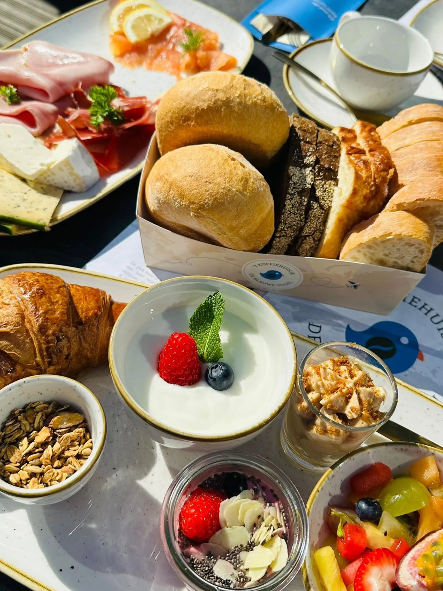
Ontbijten aan de Kaai.
Een luxe ontbijt dat echt luxe is, huisbereide pannenkoeken, een slaatje voor de lunch en koffie van Viva Sara. Neem daarna een kraakvers zuurdesembrood mee naar huis.
Een klein stukje geluk bij je koffie.
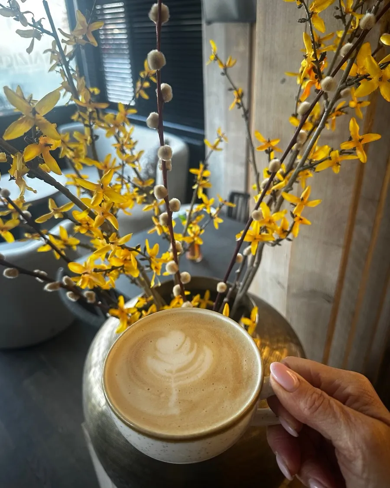
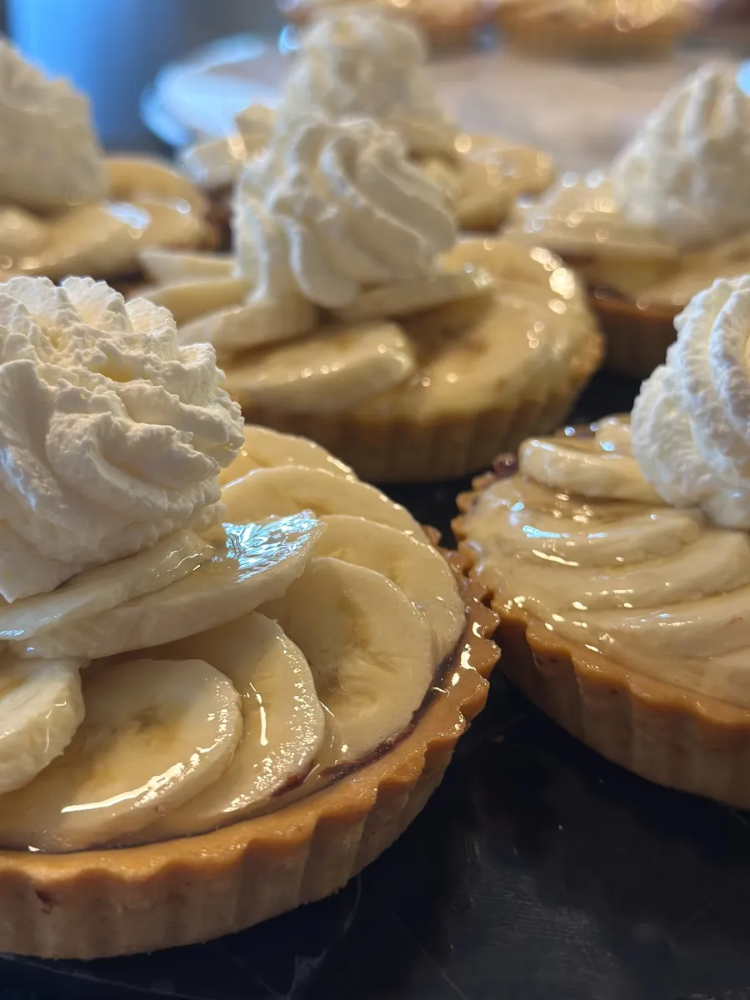
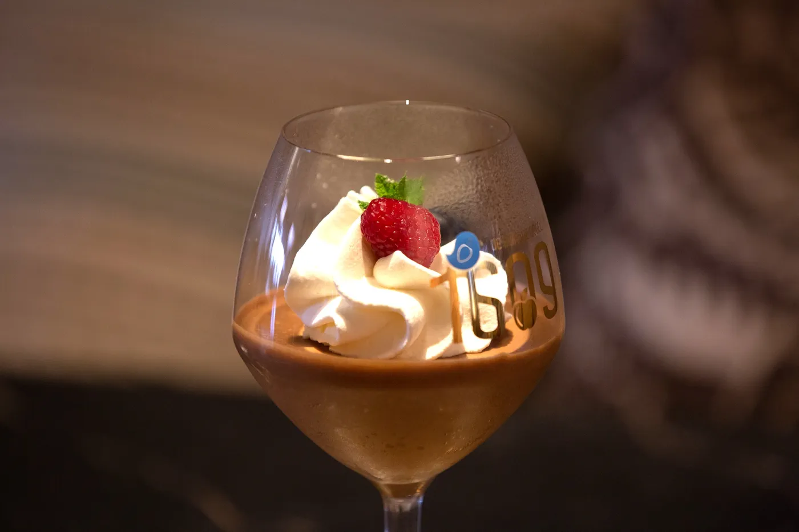
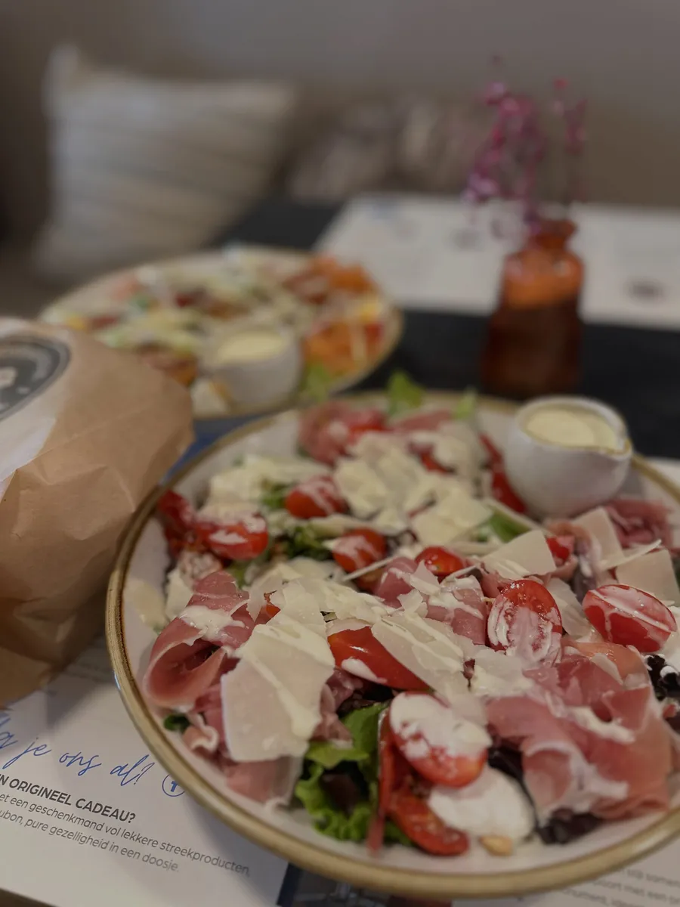
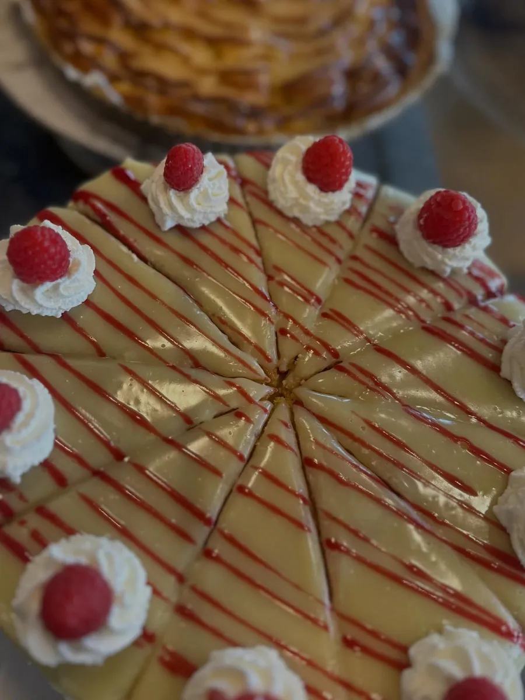
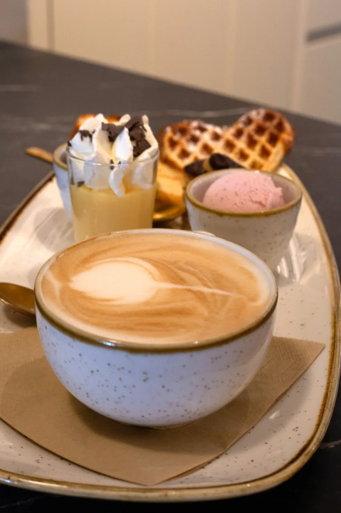
Van ontbijt tot vieruurtje.
Onze pannenkoeken en wafels zijn huisbereid. Glutenvrij ontbijten kan ook: laat het ons gewoon weten bij je reservatie.
Ontbijt
- Luxe ontbijt
- Zelf samenstellen
- Glutenvrij op aanvraag
Vers fruit, lekkere broodjes, spek met eieren. Reserveren is altijd een goed idee.
Lunch
- Croques
- Quiche
- Soep
- Pasta
- Slaatjes
In de herfst bijvoorbeeld een slaatje met geitenkaas, spek en peer.
Pannenkoeken en zoets
- Huisbereide pannenkoeken
- Wafels
- Gebak
- Café glacé
Met een cappuccino of een thee erbij, op je gemak.
Een droom die werkelijkheid werd.
Meer dan 21 jaar werkte ik als oncologisch verpleegkundige. Een patiënt, Yves, zei me ooit iets dat ik nooit vergat. Hij is een beetje de peter van deze zaak geworden.
"Je moet durven Vanessa, niet omkijken, maar doen!"
Dus deden we het. Samen met Daan, die ooit beenhouwer was maar eigenlijk alles kan, van bakken tot schilderen. En met Sharon, Evy en onze flexi's achter de toog.
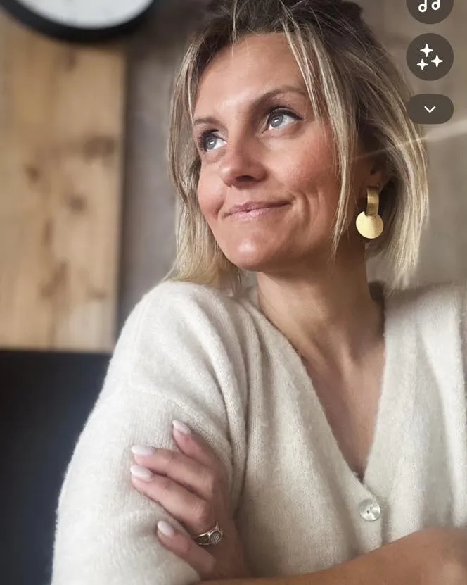
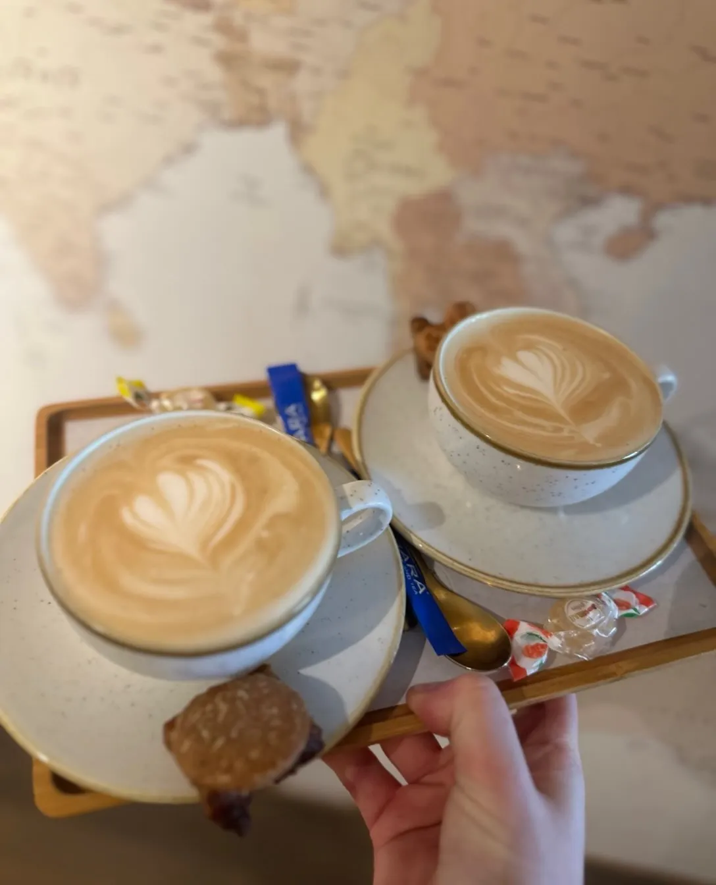
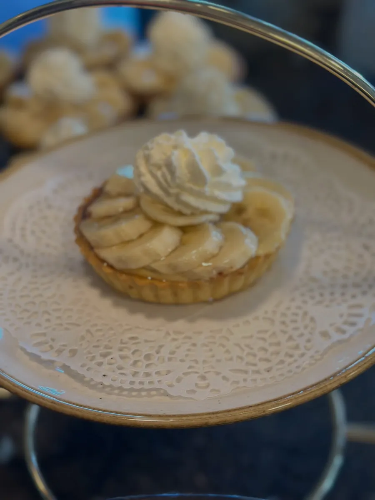
De perfecte ochtendroutine aan de Kaai.
Eerst een dampende cappuccino, een koffie of een thee, of gewoon een ontbijtje. En daarna een kraakvers ambachtelijk zuurdesembrood mee naar huis.
Koffie van Viva Sara
Waar we elke dag een beetje verliefd op zijn.
Zuurdesembrood
Ambachtelijk en kraakvers, om mee te nemen.
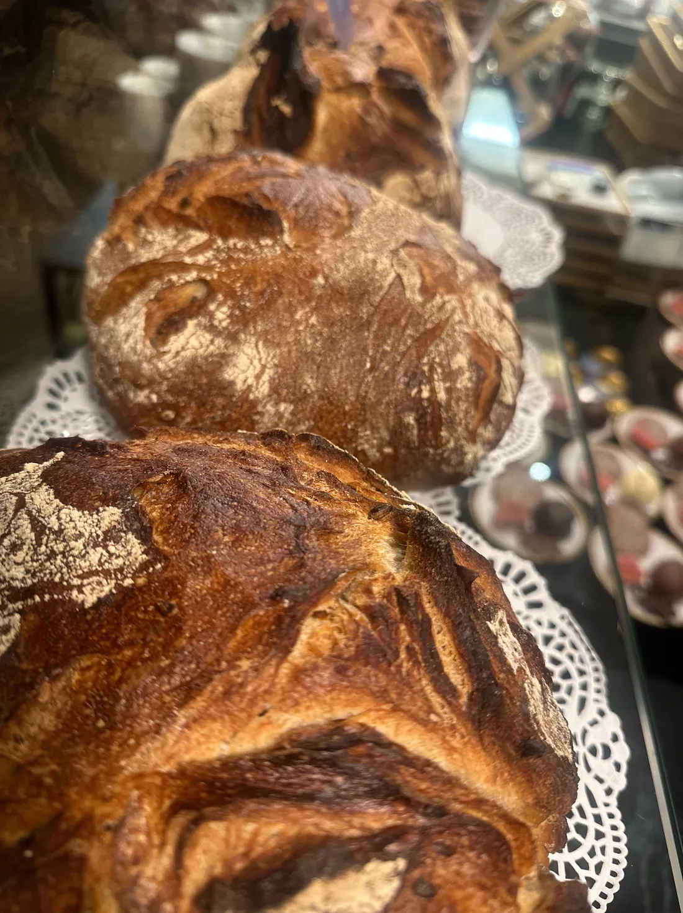
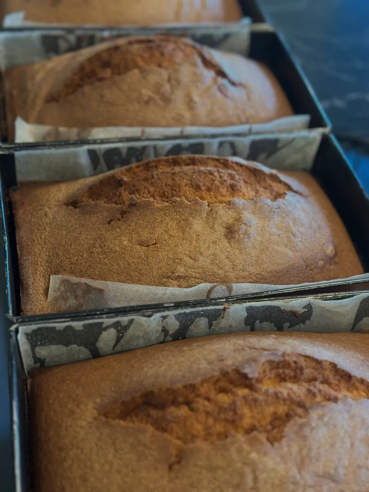
"Op alle vlakken top!"
"Als je hier een luxe ontbijt vraagt, dan krijg je ook echt een LUXE ontbijt ❤️! Alles was tot in de puntjes verzorgd! Van echt vers fruit, lekkere broodjes, heerlijk spek met eieren en zeer snelle en vriendelijke bediening."Caroline K · Google
"Heel lekker ontbijt gegeten. Volledig glutenvrij! Ze waren er zeer vriendelijk. Het glutenvrij ontbijt is wel enkel te verkrijgen op aanvraag, dus je reserveert best."Inne De Bock · Google
"Op alle vlakken top! Mooi verhaal, héél lekker eten en zeer vriendelijke bediening. We komen terug als we weer in Nieuwpoort zijn! (De hond was ook welkom 🐶)"Arne D'huyvetter · Google
"Heel leuke sfeer echt de beste barvrouw ❤️altijd een glimlach , dranken heel lekker zeker deze café glacé (heerlijk) 😊"Lilwenn Le Cudennec · Google
Tot aan de Kaai.
Kaai 18A
8620 Nieuwpoort
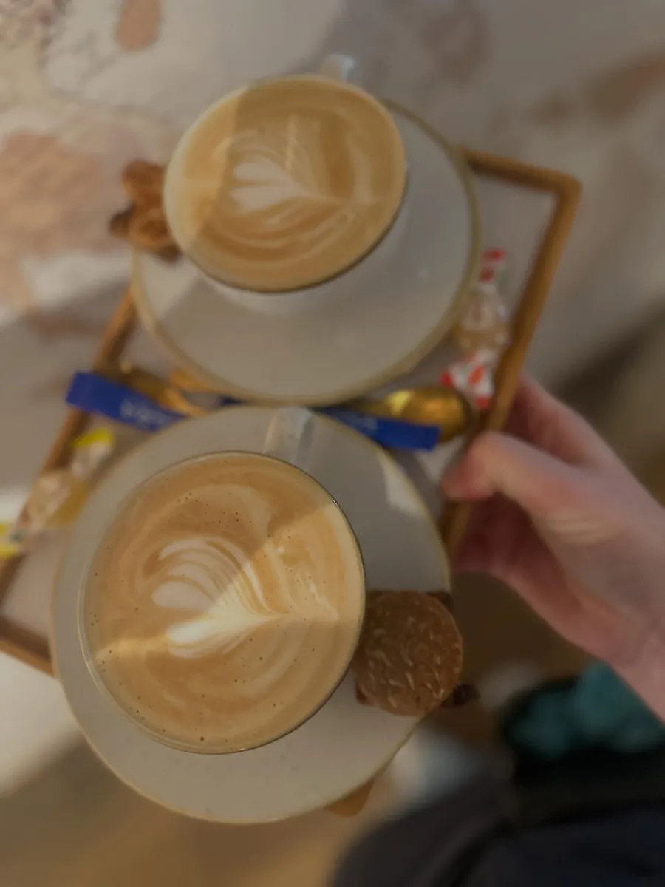